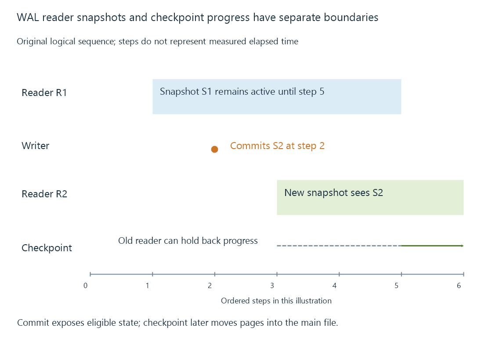

Database write-ahead logging, readers and checkpoints
Write-ahead logging records committed database changes in a log before checkpointing them into the main file, supporting reader snapshots with particular concurrency rules.
Write-ahead logging, or WAL, lets a database record changes in a log before incorporating them into its main data file. In SQLite's WAL mode, committed changes can therefore be part of the current logical database even while the main file still contains an earlier version of those pages.
That is the starting point for understanding concurrent readers, checkpoints and backups. The main file's last-write time is not a complete report of the current database state.
A commit adds a new visible generation
An original logical example uses two generations:
Main file contains: S1
Writer appends changed pages and commits: S2 in WAL
New reader's current database: S2
Main file alone still contains: S1 for the uncheckpointed changes
The WAL includes the information needed to identify completed transactions. A reader does not simply treat every byte at the end of a log as a valid committed change.
SQLite's actual log uses database pages and transaction markers rather than the symbolic S1/S2 names above.
Readers have an end mark
When a WAL read transaction starts, it establishes the committed point it is allowed to see. Later writes can extend the log while that reader continues to see its earlier snapshot.
| Moment | Original reader R1 | Writer | New reader R2 |
|---|---|---|---|
| R1 begins at S1 | Sees S1 | No new commit yet | Not started |
| Writer commits S2 | Still sees S1 | S2 complete | Not started |
| R2 begins | Still sees S1 | S2 remains current | Sees S2 |
| R1 ends and begins again | Can observe the newer point | — | Its own snapshot remains defined |
A reader may obtain the relevant page from the main file or from an applicable WAL record. Its end mark determines which version is eligible.
This is how reading and writing can coexist without exposing a partly written transaction. It is not a promise that every reader always sees the newest committed state immediately.
Checkpointing moves the storage representation
A checkpoint transfers eligible committed page versions from the WAL into the main file. That changes where the state is represented; it is different from the original application commit.

An older active reader can prevent checkpoint progress beyond the point it still needs. A long-lived read transaction can therefore keep WAL history needed even while later writers continue making progress.
The log file's physical size also does not map directly to “this many uncommitted changes.” Reuse, checkpoint progress and retained allocations influence it. Deleting or truncating a companion file outside the database's supported lifecycle is not an ordinary cache cleanup operation.
There is still one writer
SQLite WAL allows readers and a writer to overlap, but it does not supply unrestricted simultaneous independent writers. The implementation serializes writes to one WAL.
A second write operation can encounter a busy condition. Recovery, exclusive access and connection cleanup can also produce busy results. WAL improves a particular concurrency arrangement; it does not abolish all locks or waiting.
SQLite's ordinary shared-memory WAL coordination also requires participants on the same host. Placing a live WAL database on a network file system does not become a supported multi-host database merely because both machines can read its files.
Crash recovery needs the completed state
A crash can leave the main file and WAL together representing the last recoverable committed point. The database's recovery rules distinguish valid completed records from incomplete work.
An application response, a transaction commit result and durability after power loss still have different meanings. Synchronization configuration and the lower storage stack influence durability. The WAL file is part of the protocol that coordinates those writes, not a universal replacement for storage guarantees.
A backup must capture a consistent database
Copying only the main file while committed changes remain in WAL can omit those changes. Copying the main file and WAL at unrelated moments can also fail to establish one consistent capture.
A supported database-aware backup API or the application's documented stopped-server procedure coordinates the relevant state. SQLite's online backup API supplies an engine-managed mechanism; Emby's manual backup documentation requires the server process to be stopped.
A useful recovery record identifies the supported capture method and required files rather than advising users to delete a “large temporary WAL.” The file may contain state needed for the latest generation or for active readers.
The accompanying isolated reader/writer example checks old-reader and new-reader observations, competing writer behavior and checkpoint recovery. It demonstrates SQLite mechanics on new toy data; it does not attest the journal configuration or engine version of an installed Emby server.
See Also
- Database transactions and atomic application changes
- Database locking and competing operations
- Application-data backups and consistent server state